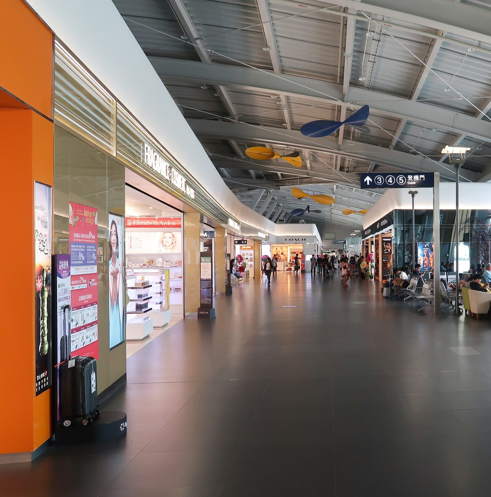

타이중 공항 출국, 캐리어 무게와 편의점은 어디서 챙길까?
편의점은 출국심사 전에만 있고, 심사 뒤 3층에는 식당·카페·자판기가 있어요 — 순서만 알면 시간이 남습니다.
게시
"타이중 공항에서 캐리어 무게는 어디서 재고, 출국심사 뒤에도 편의점이 있을까요?" 타이중 공항 출국은 타오위안보다 터미널이 작아서 동선이 단순하지만, 편의점이 전부 심사 전 구역에 있다는 점은 미리 알아 두는 게 좋아요. 타이중 국제공항(臺中國際機場)을 운영하는 臺中航空站의 공식 층별 안내와 시설 목록을 바탕으로 출국 순서와 쓸 만한 시설을 2026년 10월 기준으로 정리해봤어요.
01 · 타이중 공항 출국 동선, 층별로 한눈에 보기
| 층·구역 | 있는 것 | 들르면 좋은 때 |
|---|---|---|
| B1 버스 승차장(국제선) | 공항버스 승차장(1~3번 승강장), 자판기, 충전기 | 버스로 공항에 도착할 때 |
| 1층 출국 로비 | 3번 문 왼쪽 안내데스크·이민서·세관/택스리펀 카운터·은행, 3번 문 옆 보험·통신, 2번 문 옆 짐 포장 카운터, 스타벅스(06:00~19:30) | 체크인, 택스리펀 확인, 짐 정리 |
| 1층 입국 로비 | 패밀리마트(06:00~20:00), 환전 창구(06:00~23:00), ATM, 코인 로커, 식당 hómee KITCHEN(08:00~20:30) | 출국심사 전 간식·교통카드 잔액 쓰기 |
| 3층 출국장(심사 후) | 면세점·라운지·기도실, 식당·카페(06:00~20:30/23:00), 자판기 | 탑승 전 식사·쇼핑 |
시설 위치와 영업시간은 臺中航空站 공식 안내(2026년 10월 기준)예요. 국제선 출국 순서는 1층에서 체크인과 짐 부치기를 마친 뒤 보안검색과 출국심사를 거쳐 3층 대합실로 올라가는 흐름입니다. 시내에서 오는 공항버스는 국제선 B1에 서고, 공식 안내 기준 타이중역과 공항을 잇는 노선은 500·333번, 고속철 타이중역과 잇는 노선은 156번이에요. 영업시간은 항공편에 맞춰 바뀔 수 있으니 방문 전 구글맵에 등록된 시간도 함께 확인하세요.
02 · 캐리어 무게, 체크인 전에 어디서 확인할까
공용 저울은 공식 안내에 없어요 臺中航空站 시설 목록에는 승객이 마음대로 쓰는 저울이 따로 나와 있지 않아요. 무게가 걱정되면 1층 출국 로비 3번 문 왼쪽 여행자 안내데스크(06:00~23:00, 항공편에 따라 조정)에 먼저 물어보는 편이 빠릅니다.
짐을 다시 싸야 하면 2번 문 근처 국제선 1층 2번 문 근처 수하물 서비스 카운터(08:30~20:30)에서 캐리어 벨트와 택배 서비스를 운영해요. 짐을 나눠 담거나 묶어야 할 때 들르기 좋아요.
체크인은 이륙 2~3시간 전 공식 출국 안내는 이륙 2~3시간 전에 항공사 카운터로 가라고 권해요. 체크인 마감 시각과 위탁·기내 수하물 무게 규정은 항공사마다 다르니 예약한 항공사 기준으로 확인하세요.
택스리펀 물건은 꺼내기 쉽게 신고하거나 택스리펀 확인을 받을 물건이 있으면 1층 세관 출국 카운터에 들르라고 안내해요. 택스리펀 기계는 1층 출국 로비에 있고 06:00~22:00에 쓸 수 있어요.

03 · 출국심사 전에 끝낼 것: 편의점·교통카드·환전
편의점은 심사 전에만 있어요 공식 매장 목록의 편의점은 국제선 1층 입국 로비 패밀리마트(06:00~20:00)와 국내선 1층 보안검색대 옆 하이라이프(05:00~21:00) 두 곳이에요. 3층 출국장 목록에는 편의점이 없으니 과자나 음료는 심사 전에 사 두세요.
남은 교통카드 잔액 쓰기 패밀리마트는 교통카드와 전자지갑 충전·결제 서비스를 안내하고 있어요. 이지카드 잔액이 조금 남았다면 출국 전에 간식값으로 쓰기 좋습니다.
환전과 ATM은 1층 입국 로비 대만은행 환전 창구는 국제선 1층 입국 로비에서 06:00~23:00에 열고, 같은 층에 ATM도 있어요. 1층 출국 로비의 대만은행 창구(09:00~15:30)는 일반 금융 업무용이라고 안내합니다.
커피는 출국 로비 스타벅스 국제선 1층 출국 로비 스타벅스는 06:00~19:30에 열어요. 저녁 늦은 비행기라면 3층 출국장 카페를 이용하세요.
04 · 타이중 공항 출국장(3층)에서 쓸 수 있는 것
출국심사를 마치면 3층 대합실로 들어가요. 탑승구는 1~6번이고, 안쪽 시설이 많지는 않지만 한 끼와 마지막 쇼핑은 해결할 수 있습니다.
식당과 카페 1·2번 탑승구 근처 hómee KITCHEN은 06:00~20:30(마지막 주문 19:40)에 중식·양식 간단한 식사와 타이중 지역 샤오츠를 팔고, 3·4번 탑승구 근처 Wing Café는 06:00~23:00에 커피와 간단한 식사를 팔아요.
자판기와 라멘 자판기 5·6번 탑승구 옆에 음료 자판기와 라멘 자판기가 있어요. 기계마다 받는 결제 수단이 다를 수 있으니 동전과 소액 지폐를 조금 남겨 두면 편합니다.
면세점 昇恆昌 면세점이 3층 대합실에서 06:00~23:00에 화장품·향수와 주류·담배·초콜릿을 팔아요. 공식 층별 안내에 따르면 대합실 양쪽에 면세점이 있습니다.
라운지·안내데스크·충전 만다린항공과 스타럭스 라운지가 5·6번 탑승구 근처에서 출국편 시간에 맞춰 운영해요. 3·4번 탑승구 옆 안내데스크와 대합실 충전 스테이션도 있습니다.

"國際線出境旅客通過證照查驗後，即進入候機區。左側設有免稅商店與貴賓室；右側則設有免稅商店與祈禱室。" — 출국심사를 마치면 바로 대합실이고, 왼쪽에 면세점과 라운지, 오른쪽에 면세점과 기도실이 있다는 臺中航空站 공식 3층 안내예요.
공항 가기 전 타이중 시내에서 마지막 한 끼나 차 한 잔을 찾는다면 타이중 맛집 지도와 타이중 카페 모음을 먼저 보세요. 패션프루트 녹차가 소개된 차 음료 가게 Chi Cha San Chen과 젤라토 가게 MINIMAL도 지도에 있어요.
지도에서 타이중 카페도 확인해보세요
공항 가는 날 들를 카페를 미리 찜해 두면 마지막 날이 덜 바빠요.